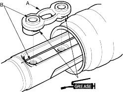
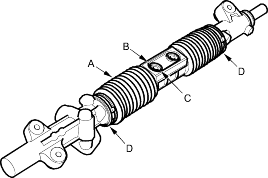
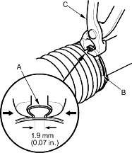
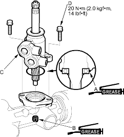

- Apply multipurpose grease to the sliding surface of the slider guide (A).
Slide the steering rack all the way to left, and place the slider guide on the steering rack by aligning the bolt holes (B).

- Centre the steering rack within its stroke, and align the slider guide (B) with the holes (C) in boot A. Fit the slider guide to boot A by pressing around the edges of the holes securely.

- Clean off any grease or contamination from the boot installation grooves around on the housing.
- Expand boot A by removing the vinyl tape, and fit the boot both ends (D) in the installation grooves on the cylinder housing.
- Close the ear portion (A) of the bands (B) with a commercially available pincers, Oetiker 1098 or equivalent (C).

- Coat the new O-ring (A) with grease, and carefully fit it on the valve housing.

- Apply grease to the needle bearing (B) in the gearbox housing, then install the valve body unit (C) by engaging the gears. Note the valve body unit installation position (direction of the line connections).
- Tighten the flange bolts (D) to the specified torque.